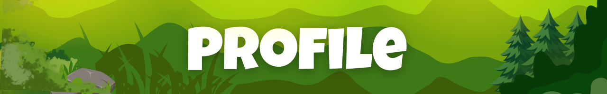

Nama: Christabelle Sydney Johnnie
Kelas/Absen: 93/11
Motto:"Menjaga lingkungan bukan hanya sekedar angan-angan, tetapi perlu tindakan"
Tujuan Membuat Website
Kita hidup di tengah berbagai tantangan lingkungan, dan hal itu membuat saya tertarik untuk memahami bagaimana manusia dapat hidup lebih peduli dan bertanggung jawab terhadap alam. Sikap sederhana seperti tidak membuang sampah sembarangan, menghemat air dan listrik, serta menjaga kebersihan sekitar dapat membantu menciptakan lingkungan yang sehat dan nyaman. Dari pengalaman di sekolah, seperti ikut kerja bakti dan mengurangi penggunaan plastik, saya belajar bahwa kepedulian terhadap lingkungan dimulai dari diri sendiri. Karena alasan itu, saya membuat website ini sebagai tugas yang dapat membantu saya membagikan pemahaman tentang pentingnya menjaga dan melestarikan lingkungan dalam kehidupan sehari-hari.
Indonesia masih menghadapi berbagai masalah lingkungan seperti polusi, penumpukan sampah, dan kerusakan hutan. Melalui website ini, saya ingin mengajak pembaca untuk semakin peduli terhadap isu-isu tersebut. Langkah sederhana seperti memilah sampah, mendaur ulang, menanam pohon, serta menggunakan sumber daya secara bijak dapat membantu menjaga kelestarian alam. Sebagai pelajar, saya berusaha menerapkan kebiasaan ramah lingkungan dan mengajak orang lain untuk ikut menjaga bumi agar tetap bersih, sehat, dan lestari bagi generasi sekarang maupun yang akan datang.